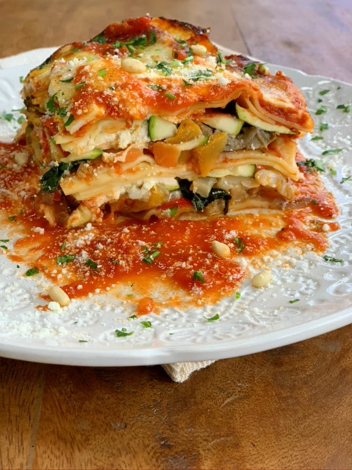

This veggie lasagna will have everyone eating out of your hand or whatever you use to serve them food.... NOT!!
This is perfect for the ones who wants to lay off the meats a lil'bit or those wanting to try something "new" "different"!...riiight anyways-___-
I mean it's lasagna minus the meat nothings special but Hey!! You do you Aiight!!
Sooo here's what you'll need to make this basic (like this website)....BUT bomb?? lasagna -__-
Is a lasagna really a lasagna without meats??
What Else??? U know what?!Feel free to improvise shorty this yo' dish u the one who gon' eat it not me!!
Aiight Boom!!! Soo here's what you gon' do.
Now when all is done you can eat it... and burn yo' mouth or yo' fat a** can wait 15 min!!
Return to top Return to main page